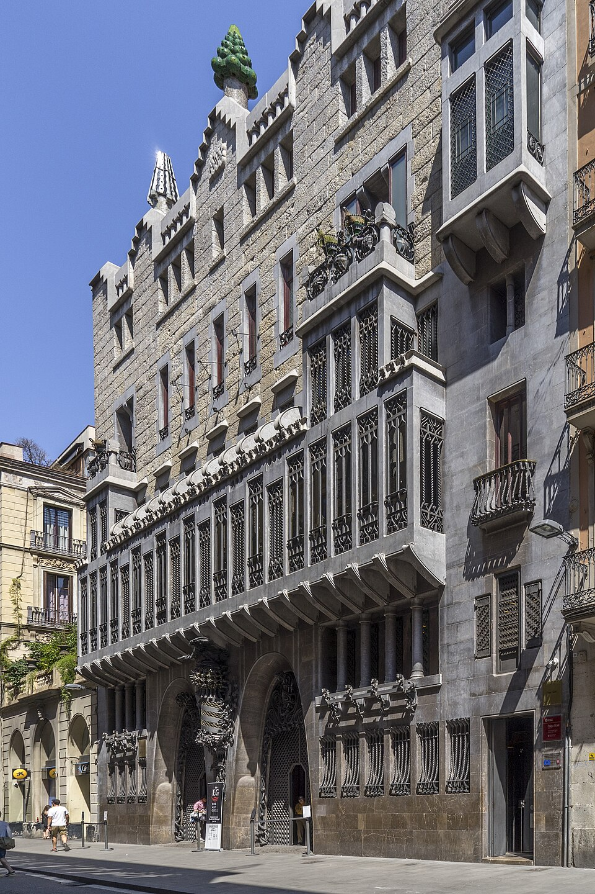

L'Època de la Modernitat i la Reafirmació Global
El segle XX va ser un període de profunds canvis, convulsions i una espectacular modernització per a Barcelona. Marcat pel floriment del Modernisme, els reptes de guerres i dictadures, i finalment l'eufòria dels Jocs Olímpics de 1992, la ciutat es va consolidar com un referent internacional.
A principis de segle, Barcelona es trobava en ple apogeu del Modernisme, un moviment artístic i arquitectònic que va deixar una petjada imborrable a la ciutat. Arquitectes com Antoni Gaudí, Lluís Domènech i Montaner i Josep Puig i Cadafalch van crear obres mestres que avui són Patrimoni de la Humanitat, com la Sagrada Família, el Park Güell, la Casa Batlló o el Palau de la Música Catalana. Aquestes edificacions van transformar l'estètica urbana i van atreure l'atenció mundial.
No obstant això, el segle també va portar inestabilitat política i social. La Setmana Tràgica de 1909, la dictadura de Primo de Rivera, la proclamació de la República i la Guerra Civil Espanyola (1936-1939) van tenir un impacte devastador a la ciutat. Barcelona va ser un baluard republicà i va patir intensos bombardeigs, deixant cicatrius profundes al seu teixit social i arquitectònic.
La postguerra i la llarga dictadura franquista (1939-1975) van suposar un període de repressió política i cultural, amb la prohibició del català en l'àmbit públic i una alentiment del desenvolupament econòmic i urbanístic en comparació amb d'altres ciutats europees. No obstant això, Barcelona va mantenir el seu esperit de resistència i, en les darreres dècades del franquisme, va començar a gestar-se una important oposició.
Amb l'arribada de la democràcia a finals dels anys 70, Barcelona va iniciar una etapa de recuperació i transformació sense precedents. La Generalitat de Catalunya va ser restaurada, i la ciutat va recuperar el seu dinamisme polític i cultural. Es van impulsar grans projectes urbanístics, recuperant el front marítim i creant noves infraestructures.
El punt culminant d'aquesta transformació va arribar amb la designació de Barcelona com a seu dels XXV Jocs Olímpics de 1992. Aquest esdeveniment va actuar com un catalitzador, accelerant la modernització de la ciutat a tots els nivells: es van crear noves rondes, es van remodelar barris sencers (com el Poblenou), es va construir la Vila Olímpica i es van obrir noves platges. Els Jocs Olímpics no només van deixar un llegat d'infraestructures, sinó que també van projectar la imatge de Barcelona a nivell global, convertint-la en una ciutat turística i cosmopolita.
Al final del segle XX, Barcelona s'havia reinventat completament. Havia aconseguit superar els traumes del passat i s'havia consolidat com una de les ciutats més atractives i vibrants d'Europa, un centre de disseny, cultura, innovació i turisme, mirant cap al nou mil·lenni amb una renovada confiança.
